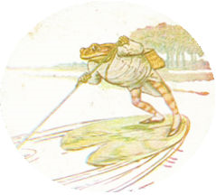
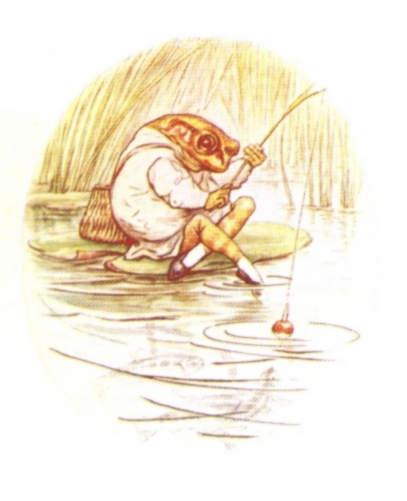
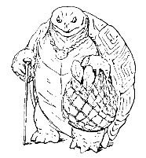
ステファニーへ いとこの Ｂより
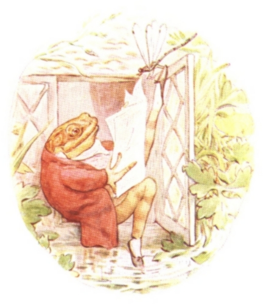
むかしむかし つりびとジェレミーさんという かえるが おりました。 すまいは いけの ほとり、 キンポウゲに かこまれた じめじめした こやです。
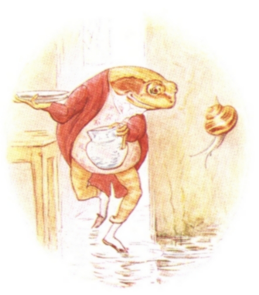
くらも、 うらぐちへ つづく ろうかも、 みずで びちゃびちゃ つるつる。
けれども ジェレミーさんは おみあしを ぬらすのが すきなのでした。 だれに おこられるでもなし、 かぜを ひくでもなし！
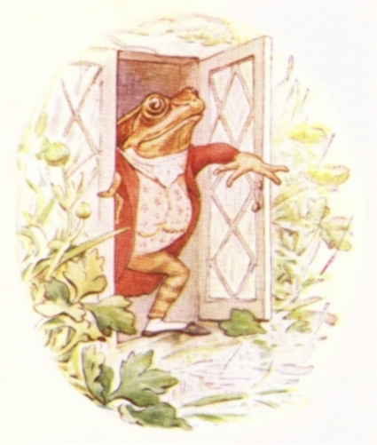
あるとき おもてを みると、 とっても うきうきしてきまして。 だって めのまえで おおつぶの あめが いけに ぱしゃぱしゃ ふっているんですから ――

「みみずでも つかまえて、 つりにでも でかけて、 ばんごはんに もろこでも １さらぶん とるか。」と つりびとジェレミーさん。「５ひきよりも おおく とれたら しりあいでも まねくか。 じじがめトレミーさんに いもりやアイザックさまだな。 まあ、 じじがめさんは やさいしか くわんけども。」
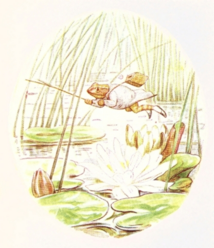
ジェレミーさんは あまがっぱを はおって ぴかぴかの あまぐつを はきました。 さおと かごを とって、 ぴょーん ぴょーんと おおきく はねながら こぶねを とめてあるところへ むかいます。
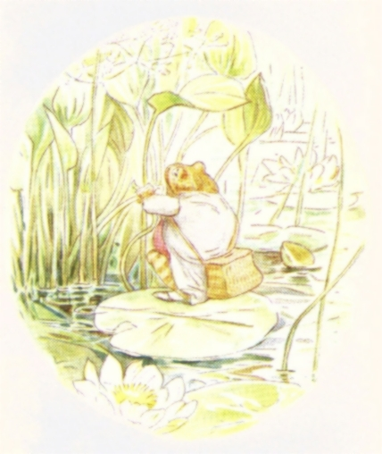
それは まるく みどりの こぶねで、 まるで ふつうの スイレンの はっぱと みわけが つきません。 いけの まんなか みずくさに くくりつけてあったのです。
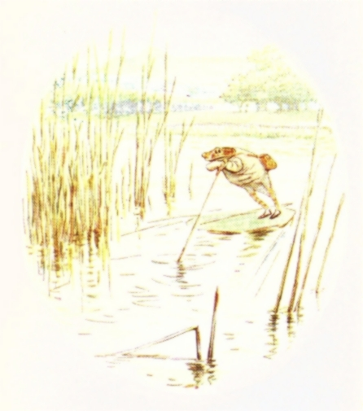
ジェレミーさんは アシのくきを てにして、 ふねを みずの ひらけたところへ おしうごかしていきました。「うむ、 もろこには うってつけの つりばが あるな。」
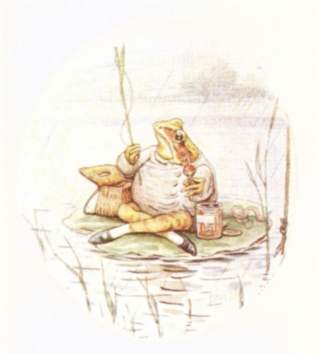
ジェレミーさんは くきを へどろに つきたて、 そこへ こぶねを とめます。
そのあと あぐらを かいて つりぐの したく。 おきにいりの あかい うき。 さおは じょうぶな くさの くき。 つりいとは じょうもので しろげの うまの ながい かみ。 さきに うねうね ちいさな みみずを とりつけました。
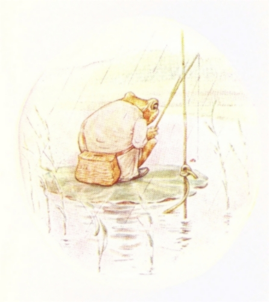
あめが ぽつぽつ せなかに おちるなか、 こいちじかん じっと うきを みつめます。
「たいくつに なってきた。 ここらで おひるにでも したいかな。」と つりびとジェレミーさん。
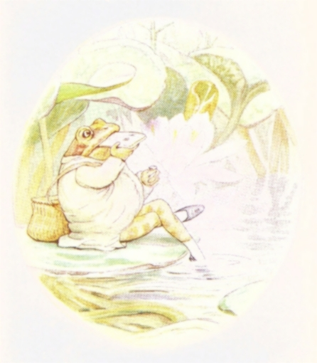
いけの そこを ついて みずくさの あたりへ もどり、 かごから おひるを とりだしました。
「ちょうちょの サンドイッチでも たべて、 にわかあめが やむまで ゆっくりでも するかな。」と つりびとジェレミーさん。
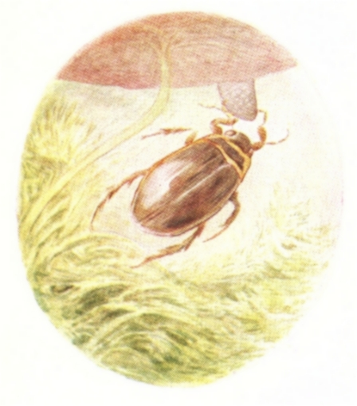
そのとき でっかい げんごろうが スイレンの はのしたに あらわれて あまぐつの つまさきを ぐっと つまみました。
ジェレミーさんは かいていた あぐらを せばめて とどかないようにして、 また サンドイッチを たべていきます。
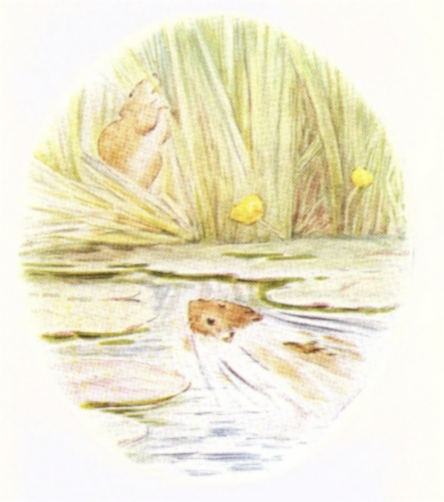
ちょこちょこ なにかが いけのわきの イグサのあたりで かさかさ ばしゃばしゃ うごきまわっていました。
「ねずみじゃあ ないな、 ぜったい。」と つりびとジェレミーさん。「どうも ここから はなれなならんかな。」
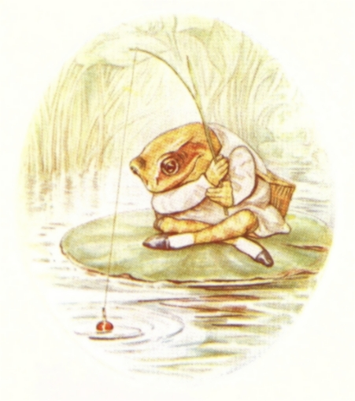
ジェレミーさんは ふねを つきうごかして ちょっと ひきかえし、 えさを たらしました。 すると いれるなり かみついてくるものが あって、 うきから ぐいぐい ひきが つたわってきまして！
「もろこ！ もろこだな！ こっちのもんだな！」と つりびとジェレミーさんは こえを はりあげ、 さおを ひっぱりあげます。
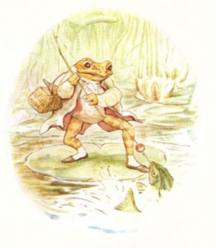
ところが なんとも まったく びっくり！ ふっくら すべすべ もろこのかわりに ジェレミーさんが つりあげたのは、 はりだらけの とげうお、 とんがりジャックくんでした！
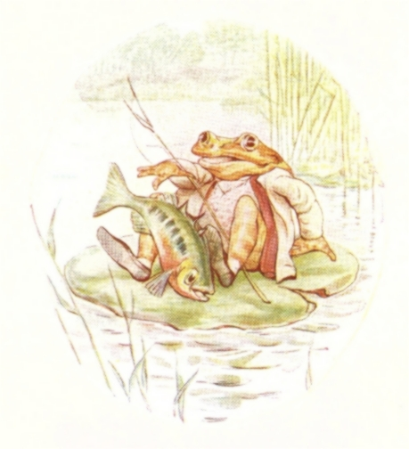
そのとげうおは こぶねで じたばた、 あげくに ちくちく ぴちぴち。 いきぎれするや また みずに とびこんでしまって。
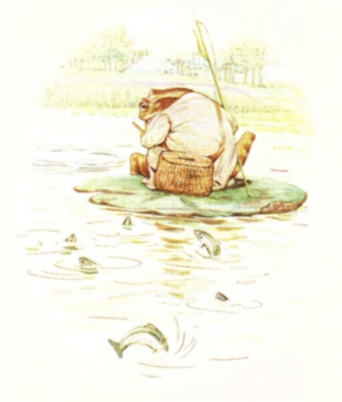
みていた こざかなの むれが あたまを のぞかせ、 つりびとジェレミーさんを おおわらい。
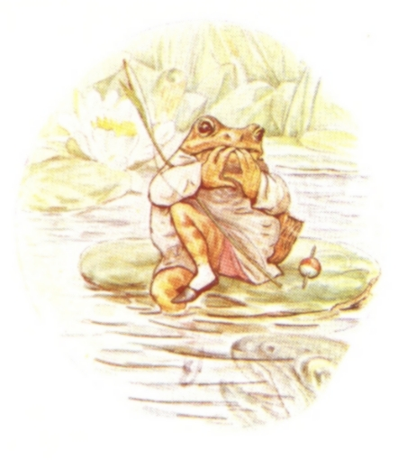
それから こぶねの へりに すわったまま やるせなく ―― いたむ ゆびを なめ、 みずのなかを のぞいていると ―― もおっと ひどいことが おこりまして。 ジェレミーさんが あまがっぱを はおってなかったら ほんとに おそろしいことに なってたかも！
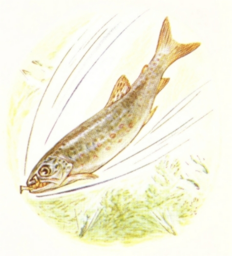
すんごく でっかい ますが あらわれて ―― ざばっ ―― ばばっ ―― ば ―― ば ―― ば！ みずしぶき ―― そして ジェレミーさんを あむっと くわえて 「あう！ うわ！ ああぁ！」―― と、 そのあと また ひるがえって とびこんで いけのそこへ ずぶずぶずぶ！

とはいえ ますは あまがっぱの あまりの まずさに ３０びょうと たたず はきだして、 のみこまれたのは ジェレミーさんの あまぐつだけでした。
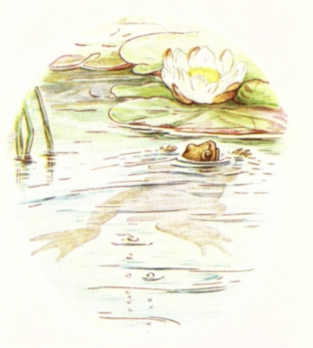
ジェレミーさんは みなもに むかって ぴゅうん、 にげるさまは まるで たんさんを あけたときの せんと あわみたいで。 いけの はしまで ぜんりょくで およいでいきました。
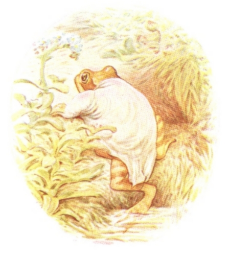
とにかく たどりついた きしを よじのぼって、 ずたずたの あまがっぱを きたまま くさちを ぬけて ぴょこぴょこ うちへ いちもくさん。
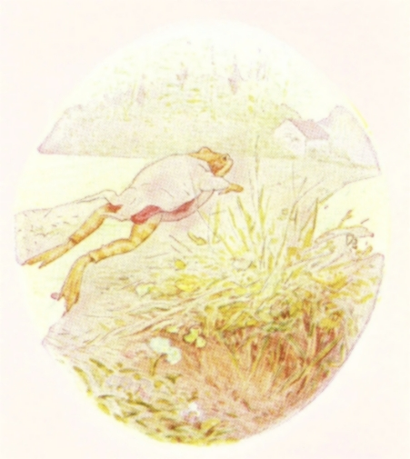
「よかった、 あれが かわかますじゃのうて！」と つりびとジェレミーさん。「さおと かごを なくしてもうた。 だが たいしたこたあない。 もう ぜったいに つりになんか ゆくものかいな！」
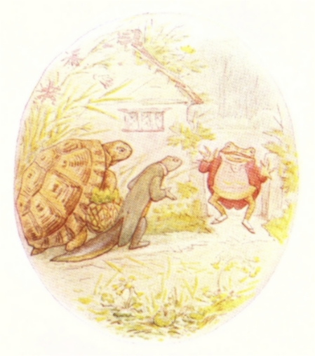
ゆびの あちこちに ばんそうこうを はっていると ともだちが ふたりして ばんごはんに やってきました。 おさかなは だせませんが、 くらには ほかのものが あります。
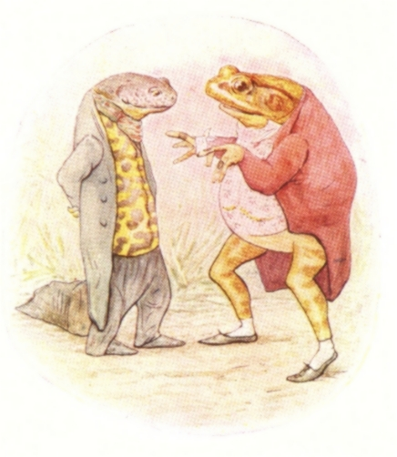
いもりやアイザックさまは くろ・きん まだらの チョッキを きていました。
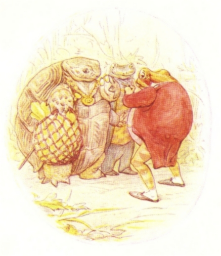
それと じじがめトレミーさんは あみぶくろに はやさいを もちこみです。
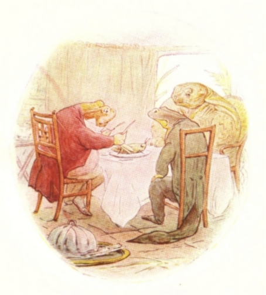
もろこの ごちそうの かわりに ―― いなごの あぶりやき てんとうむしソースぞえを みんなで たべました。 かえるには たいへんな ぜいたくなのです。 けれども わ・た・しの くちには きっと あわないでしょうね！
（おしまい）